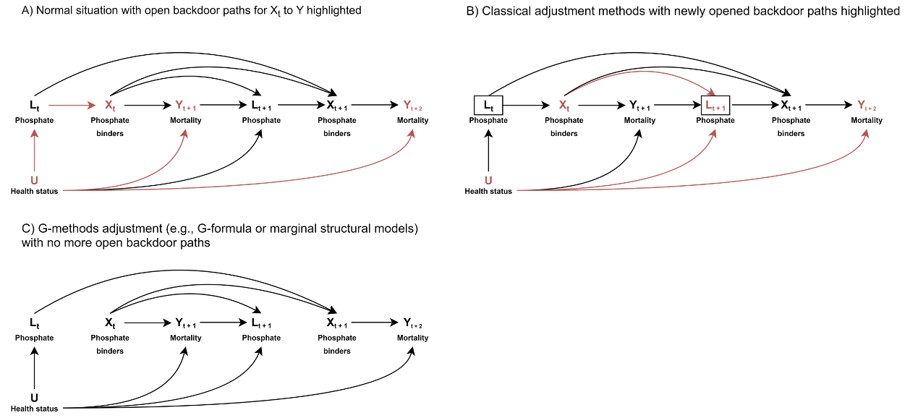
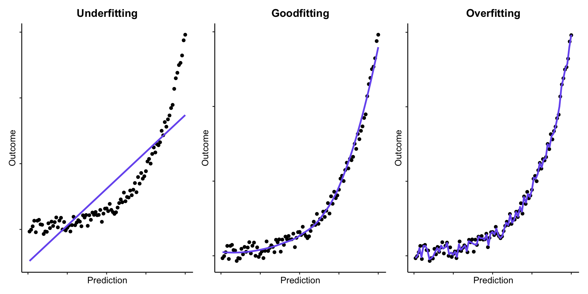
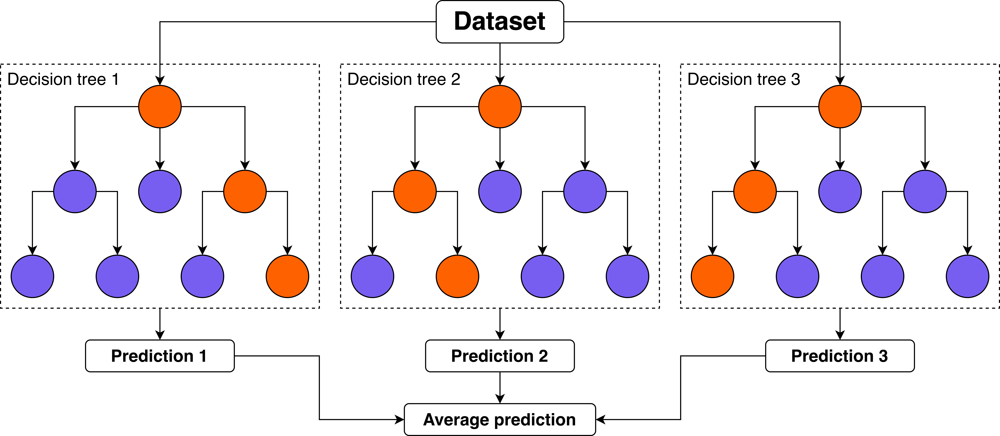
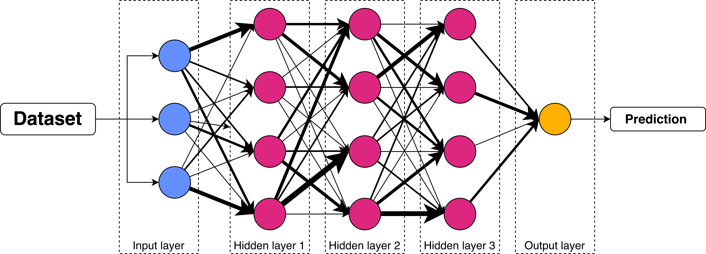
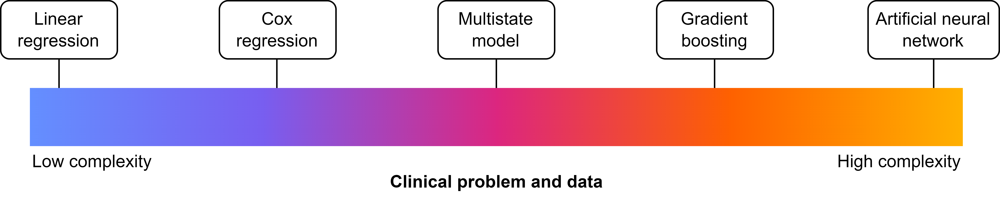

Statistical Modelling
![]()
Disclaimer
Depending on who you ask, this talk is about:
- Epidemiology
- Data science / analytics
- Machine learning / Artificial intelligence
These are generally the same, but differ in the terminology used for the same concepts, certain convictions, and approaches.
Agenda
- Tests are Void in the Presence of Models
- Digression: The Three Pillars of Research with Data
- What Makes a Model?
- Making a Model
- Modelling in Practice
Tests are Void in the Presence of Models
What is a Test?
Statistical tests are tools made for hypothesis testing.
They yield the p-value, but do not say anything about direction or size.
Examples are:
- T-test
- Chi-square test
- Fisher’s exact test
What is a Model?
Statistical models are mathematical models that summarise the relationship between different variables
This relationship is quantified and can be used for a plethora of goals beyond hypothesis testing.
Statistical tests are just simple statistical models:
| Statistical test | Equivalent statistical model |
|---|---|
| One-sample t-test | Intercept-only linear regression |
| Wilcoxon signed-rank test | Ranked univariable linear regression |
| Two-sample t-test | Univariable linear regression |
| One-way ANOVA | Multivariable linear regression |
| Chi-square test | Univariable logistic regression w/ dichotomous independent variable |
Models > Tests
Models allow us to:
- Model more explicitly
- Model more flexibly
- Derive more information from our data
Digression: The Three Pillars of Research with Data
What is our Aim?
Descriptive:
Describe some situation, such as the prevalence of a disease, or how two variables relate to each other.
Causal/etiological:
Determine whether some factor A causes some event B
Predictive (diagnostic & prognostic):
Predict the presence/future occurrence of some event or present/future value of some measurement.
What is our Aim?
These are often conflated!
Ramspek CL, et al. Prediction or causality? A scoping review of their conflation within current observational research. Eur J Epidemiol. 2021
This is problematic because, these different pillars require:
- different use of the same models
- different interpretation of the same models
- different parts of the same models’ output
What Makes a Model?
Information that Represents the Situation
We want our models to accurately represent some situation
- Descriptive: occurrence of a factor in the population of interest
- Causal: different groups which only differ on intervention status
- Predictive: probability of occurrence/expected value in population of interest
To achieve this, we need to fill our model with data: covariates & parameters.
Covariates
Covariates are variables (e.g. age, sex, eGFR) that we add to the model to represent our situation of interest:
- Descriptive: none
- Causal: intervention status + confounders
- Predictive: predictors
Covariates
The way we select these covariates is important.
- Knowledge-based: use (y)our clinical knowledge and causal graphs
- Data-driven: automatically select based on the data
Covariates: knowledge-based selection
For causal & prediction research
- Predictive: what are likely predictors & what increases face validity
- Causal: what are possible confounders?
Covariates: knowledge-based selection
For confounder selection: use DAGs
Directed acyclic graph (DAG):
- Shows relation between different variables
- Helps select the minimal relevant set of confounders (!)
- Helps avoid inducing selection bias
Covariates: knowledge-based selection

Covariates: knowledge-based selection
Two important lessons that DAGs teach us:
- We do not need to adjust for all confounders
- Selection is not selection bias per sé
Covariates: data-driven selection:
Only for prediction research
Have the data select the most predictive variables (from a set of candidate predictors) through:
From worse to better:
- Univariable selection
- Forward selection
- Backward selection
- Penalised likelihood estimation (LASSO / L1 regularisation / elastic net regression)
Covariates: data-driven selection:
Core idea: based on some measure, determine which variables aid prediction and which do not
- Univariable selection: p-value (often < 0.05, < 0.10, or < 0.178)
- Forward selection: start with one candidate predictor and then, per iteration, add new candidate predictor, keep that variable only if p-value is significant or LRT/AIC/BIC improves
- Backward selection: start with all candidate predictors and then per iteration, drop predictor based on worst p-value / test statistic
- Penalised likelihood estimation: start with all candidate predictors; the model may drop variables if they add very little value (MLE)
Covariates: data-driven selection
Overfitting: the prediction model has incorporated patterns that are coincidentally present in the development data, but not in the target population
Result: model performance is worse in reality than observed during development
Covariates: data-driven selection

(Hyper)parameters
Some models require additional parameters (also called hyperparameters) that need to be decided:
- Generalised linear model: link function
- LASSO/ridge/elastic net regression: \(\lambda\)
- Random forest: nr. of trees & tree depth
- Neural network: nr. of hidden layers
Some of these are determined based on knowledge (e.g. link function), some of these are determined through ‘tuning’ (risk of overfitting!)
(Hyper)parameters
Sometimes, we may also add weights as an additional parameter to models.
Weights result in observations being counted more or less frequently than once.
- Descriptive: represent the total population based on a skewed sample (e.g. LUMC NEO study)
- Causal: adjust for confounding by creating a pseudopopulation in which it does not exist
Making a Model
Parametric vs. non-parametric models
Most of our models summarise our data to the model output. For instance:
- Most models contain an intercept (the uncoonditional probability \(P(Y)\) or expected value \(E[Y]\))
- Our covariates are given a coefficient (a.k.a. weight) by the model
Tip
Giving a weight to a coefficient is also called the model learning the weight for that coefficient (or feature), hence the term machine learning
Parametric vs. non-parametric models
Not all models are fully parametric:
- Cox regression model: baseline hazard is not parametricised
- K-nearest neighbour: fully non-parametric model
This is relevant because:
- Parametrisation makes assumptions about the data
- No parametrisation requires the model to contain (part of) the underlying data
Model architectures
- The type of model is mainly dictated by the architecture it uses
- The architecture is built-in, but adaptable through (hyper)parameters
The simplest architecture: \(y = ax + b\) (linear regression)
Model architectures
Say that \(ax + b = X\beta\)
Generalised linear model:
- \(y = X\beta\) (linear regression)
- \(y = \frac{1}{1 + e^{-X\beta}}\) (logistic regression)
- \(y = e^{X\beta}\) (Poisson regression)
Cox regression:
\(y(t) = 1 - S_0(t)^{e^{X\beta}}, S_0(t) = e^{-H_0(t)}\)
Model architectures
Random forest:

Model architectures
Artificial neural network:

Model architectures
Now relating it to the pillars:
- Descriptive: simple architectures
- Causal: simple architectures
- Predictive: simple or complex architectures

Model architectures
Bias-variance trade-off
Bias: how predictions match the truth (i.e. good performance)
Variance: how performance varies between settings
- Complexer model: fits better, but has a higher risk of overfitting -> lower bias, higher variance
- Simpler model: fits worse, but has a lower risk of overfitting -> higher bias, lower variance
Model architectures
Machine learning vs. Statistics
Machine learning = statistics
| Statistics | Machine learning |
|---|---|
| Predictor | Feature |
| Outcome | Label |
| Estimation | Learning |
| Development data | Training + validation data |
| Validation data | Test data |
| Contingency table | Confusion matrix |
More @ Janse RJ, et al.. When the whole is greater than the sum of its parts: why machine learning and conventional statistics are complementary for predicting future health outcomes. Clin Kidney J. 2025 & Finlayson SG, et al. Machine Learning and Statistics in Clinical Research Articles-Moving Past the False Dichotomy. JAMA Pediatr. 2023 May
Modelling in Practice
How to Model
Use a programming language!
R: free, built for statistics, easy to program and read, great tools for data visualisation, used in most of medical statistics
Get started: my tutorial 😁
Python: free, built for general purposes, good statistical support, easy to program and read, used in most of computer sciences
Get started: w3schools
Julia: free, built for statistics, good statistical support, fast, relatively uncommon in use
Get started: JuliaLang
How (Preferably) not to Model
Do not use a syntax!
SPSS: €410.65/year, built for statistics, easy point-and-click, inflexible, poor syntax system, unstable (in my experience).
SAS: €?/year, built for statistics, not so flexible, syntax-reliant, many companies are reliant on it
STATA: €150.32/year, built for statistics, not so flexible, syntax-reliant, many companies are reliant on it
How to Report on your Model
Models are only useful if we report on them.
For all epidemiological studies: STROBE.
Also:
- Descriptive: A Framework for Descriptive Epidemiology
- Causal: CONSORT or RECORD
- Predictive: STARD or TRIPOD+AI
Make sure to check the Equator network for more!
Closing Remarks
- Always think about whether your study is descriptive, causal, or predictive
- Let that choice influence your modelling decisions
- Report on your model
The End
Contact me: r.j.janse-5@umcutrecht.nl
More about me: rjjanse.github.io
These slides: rjjanse.github.io/talks/modelling
Image for title slide by Environmental Graphiti:
350 Species at Risk from Climate Change
© 2025 Environmental Graphiti® All rights reserved.